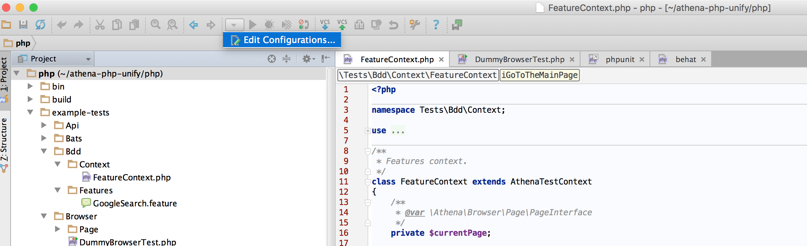
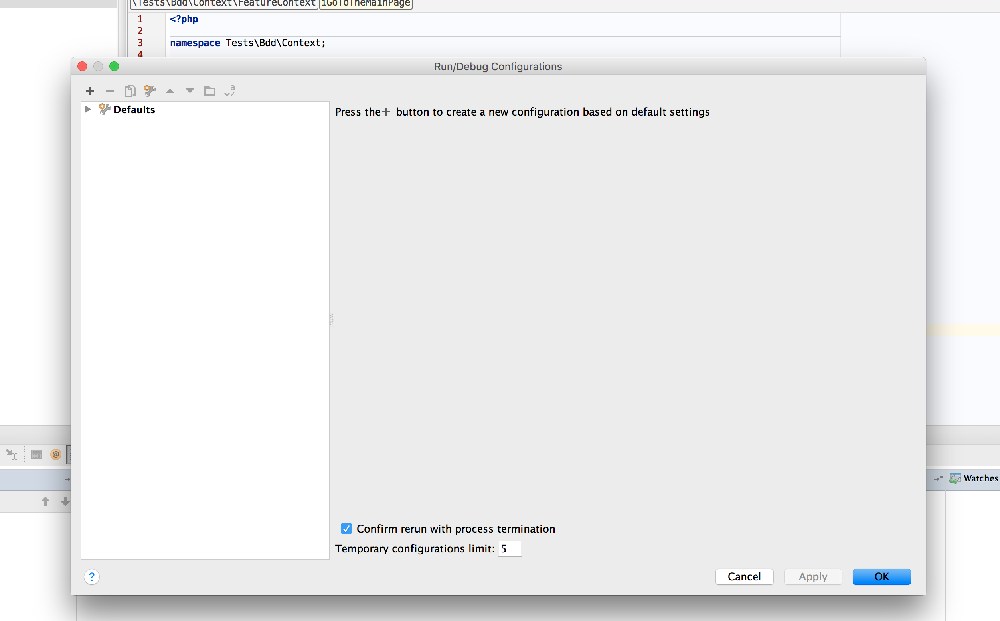
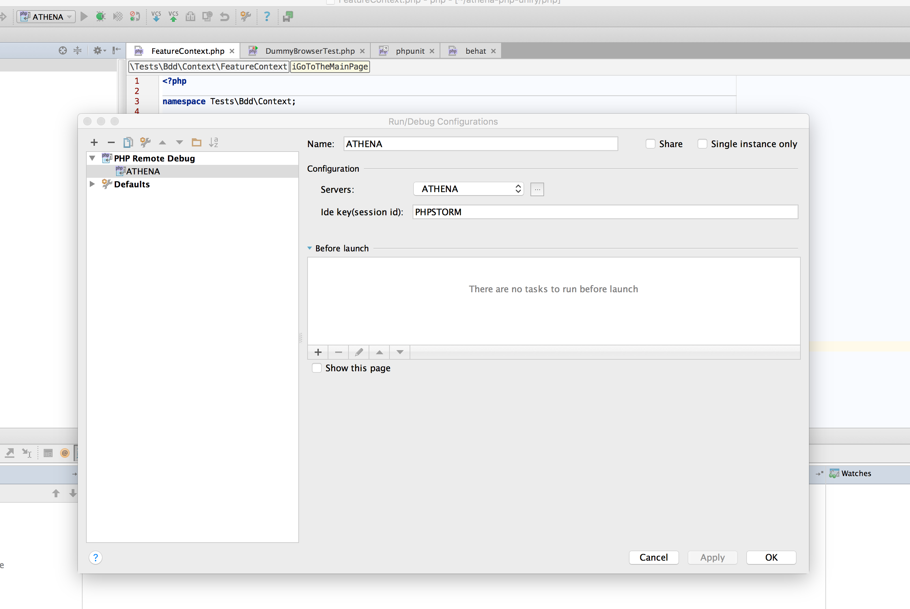
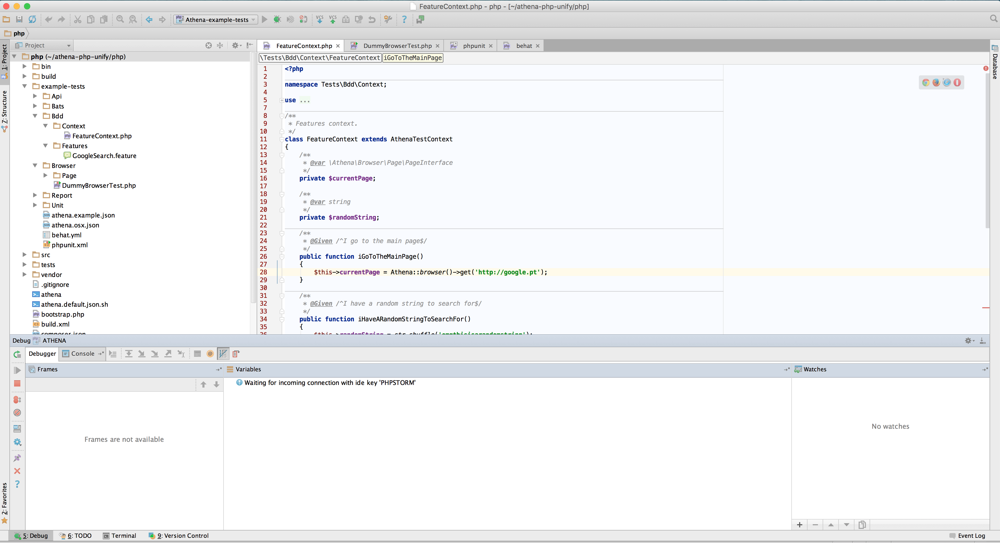
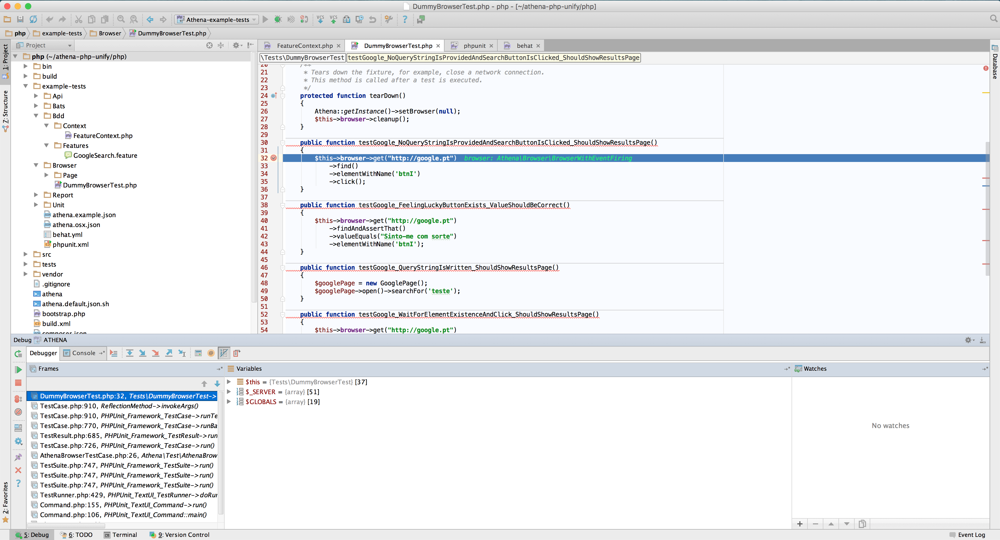

1. Open Edit Configurations
 
2. Add PHP Remote Debug


3. Add Server


4. Set Path Mappings


Note:
/opt/athena-phpmust be mapped to thephpfolder in theathenaproject/opt/testsmust be mapped to your tests project.
5. Debug
 
Then run the athena command in the CLI and that's it, happy Debugging!!!
Profiling
In case you would like to perform php profiling of your tests you need to set variable ATHENA_ENABLE_PROFILER=1 before test execution.
XDebug Profiler is being enabled with following parameters:
profiler_enable=1
profiler_output_dir=/opt/tests/opt/tests should be mapped to your tests directory so that after the test execution with profiler enabled you should find your profile information files in main test directory.